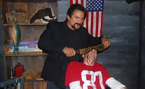
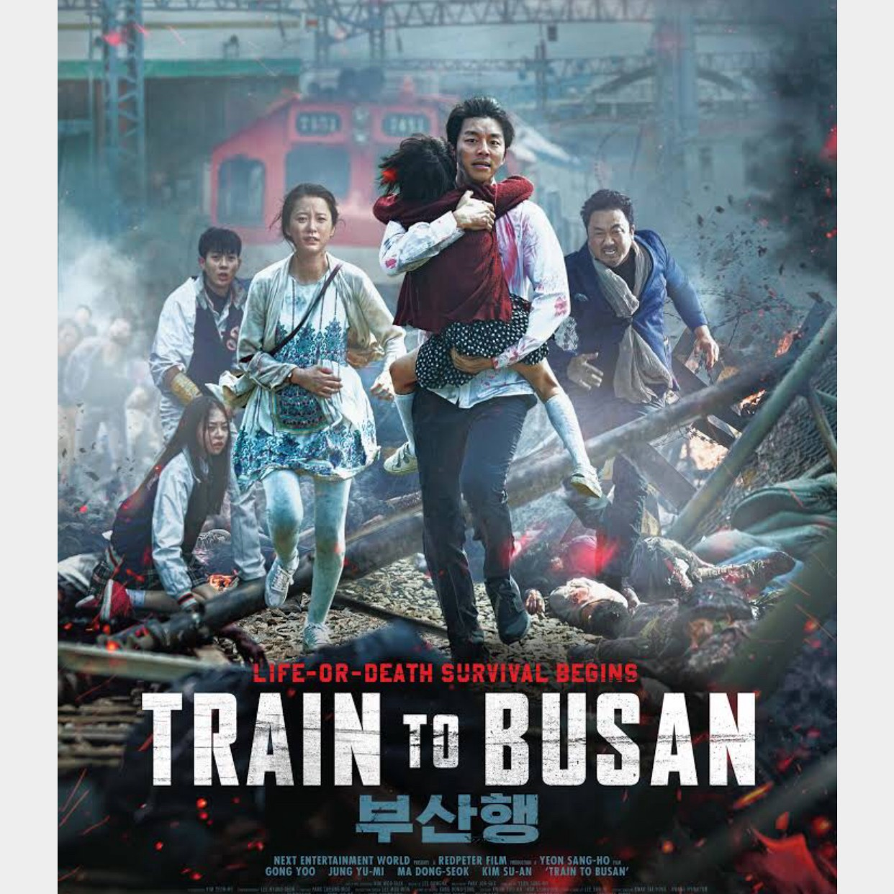

Welcome to the "Movie" tab! I love movies; any genre I don't care. If the story, acting, and production is solid I am there. It is a very common thing for me drop
random quotes from movies, or just walk out of my office point at one of my co-workers say something random and wait to see if they get the referrence. Every base
I've been stationed at my co-workers learn to expect it, it gets to the point I will spout a line and after a brief pause someone in another room will yell out the
title referenced.
Or throw out random  factoids about movies,
like did you know that Tom Savini from movies like Dawn of the Dead (1978), and Machete (2010) was actually a make-up artist. He used what he saw
during his time in the military to create practical visual effects, they were so realistic and horrific that it help make George A. Romero a staple of
the zombie genre.
My pick for this weeks October Movie
This 2016 foriegn flick  was a classic right out of the gate.
I don't know if they dubbed this one; but I'd say it's worth watching in in its native format. The tight confines of the train play very well to the modern
fast moving zombie trope, and the run of the mill passngers actually turn out to be complex charcters. This is a deeply narrative rich story, with tense
action scens and powerful messages throughout. give it a watch you won't be disappointed.